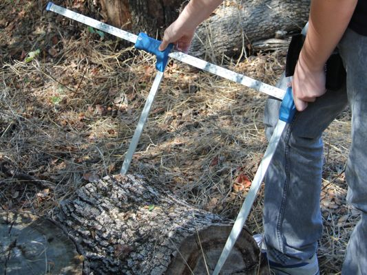
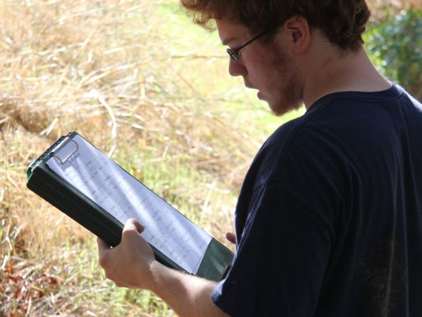

HABITAT ASSESSMENT
Habitat Assessment is the study that deals with physical measurements of the creek banks and surrounding areas by looking at how these change over time.
Habitat Students
measuring the distance between transects
Habitat Students
measuring a log at the creek.
Habitat Students
looking over data.
Habitat Students
measuring the creek.

Habitat Students
utilizing a compass.
The primary purpose of Habitat is to analyze changes in the physical aspects of the Creek habitat and assess its sustainability. Some of the most important observations include the degree of forestation of the riparian corridor and the density of its foliage coverage.
At each transect along a given site, Habitat groups measure a 10m x 10m quadract whose vegetation is then examined. Groups measure and map the locations of the trees, bushes, and other vegetation found within the quadract relative to the quadract’s center. Furthermore, measurements such as trunk width and canopy coverage are determineded and recorded. Habitat then analyzes these maps, and, in coordination with other studies such as Botany and Vertebrates, assesses the sustainability of the riparian corridor as a habitat for various species.
Habitat data is taken twice a year, in the fall and spring, and then recorded onto data sheets. Data sheets are compiled and put online for future analysis. Habitat is the ideal group for those desiring an overall view of the creek's health.
STUDY FILES:
Habitat ProtocolFall 2011 All Sites Data
Spring 2012 All Sites Data
Spring 2012 Habitat Maps
Fall and Spring 2014 All Sites Data